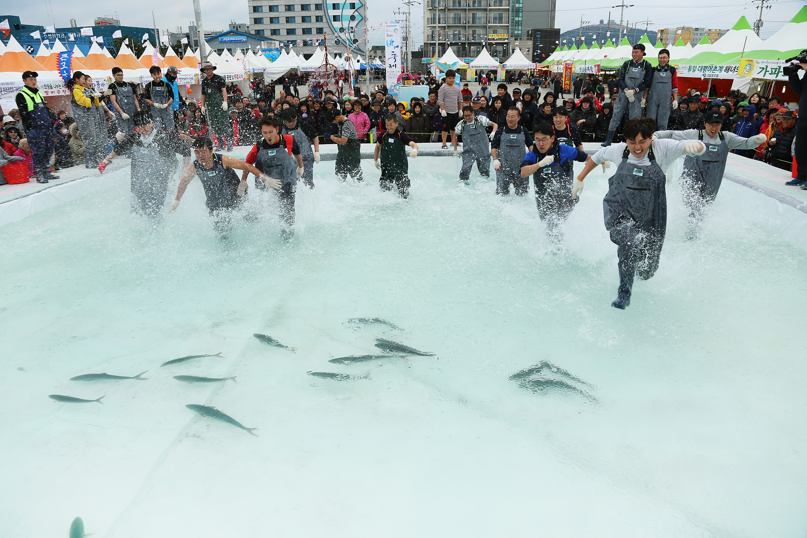

장소 상세보기
|  |
| 번호 | 8 |
|---|---|
| 분류 | |
| 장소 번호 |
D0008 |
| 장소명 | 최남단 모슬포 방어축제 |
| 장소 주요 설명 |
□ 기간 : 2022.11.26(월)~12.25(일) □ 장소 : 모슬포항 일원 □ 주요행사 : 방어맨손잡기 체험, 어린이 방어 맨손으로 잡기, 어시장 경매, 가두리 방어 낚시 체험, 소라잡기 및 불턱 체험, 아빠와 함께하는 릴낚시 체험 등 |
| 장소 상세 설명 |
방어축제는 모슬포항에서 열리는 제주의 대표적인 해양문화축제다. 방어는 가을이 되면 남쪽으로 회유하는 성질이 있는데 그 마지막 월동지가 마라도로, 마라도 인근의 자리돔을 먹으며 겨울을 보내며, 그 주산지가 모슬포항이 된다. 방어축제 기간의 모슬포는 그 어느때보다 떠들썩 하다. 매년 15~20만명의 관람객이 찾고 있으니, 제주의 대표축제 중 하나로 자리매김 한 셈이다. 통통한 방어를 눈으로 손으로 입으로 체험하고, 가을의 거친파도와 싸우며 방어를 잡는 어민들의 모습도 만나볼 수 있다. 주변에는 산방산과 송악산 등 자연자원과 대정향교, 추사관 등 역사문화 유적이 있어 다채로운 테마의 여행을 기획하기 좋다. |